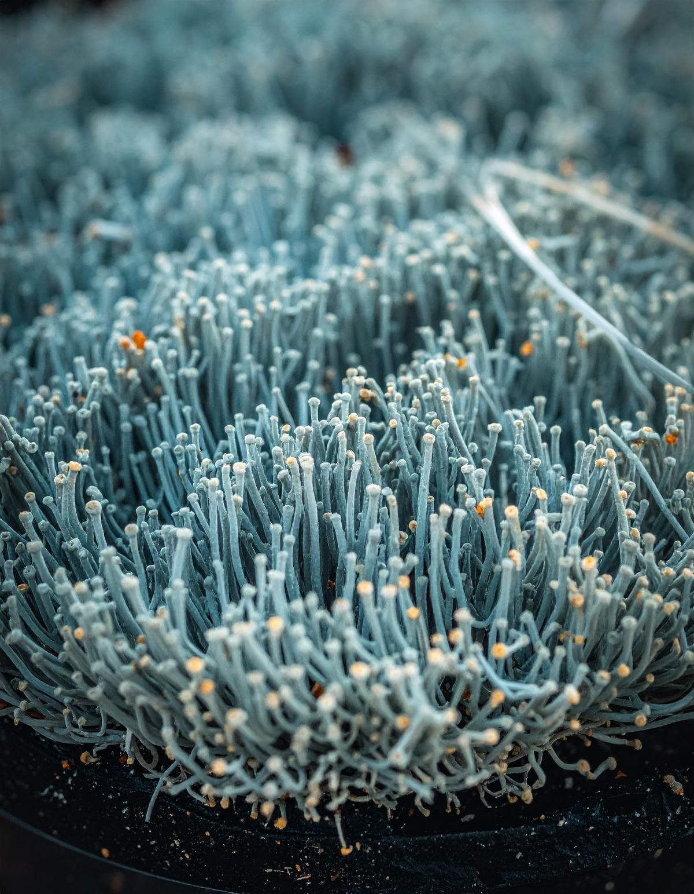

Capital Vivo acompaña a instituciones del ecosistema financiero a ejercer ese poder a través de sus decisiones y operaciones cotidianas, con un enfoque construido junto a organismos internacionales, bancos de desarrollo, reguladores e instituciones financieras de América Latina.
Origen
Capital Vivo nace de la trayectoria de Cecilia Lazarte en la transformación de sistemas financieros inclusivos en América Latina y el Caribe. Su experiencia más reciente fue la conducción técnica del programa Ecosistemas Financieros Inclusivos (EFI) en Guatemala, Honduras y El Salvador, financiado por Luxemburgo: durante tres años diseñó la metodología y lideró los equipos nacionales, alcanzando a más de 80 instituciones financieras.
Convicción
El sistema financiero no es únicamente un intermediario de capital. Es un actor que participa activamente en la construcción de las condiciones que hacen posible —o dificultan— el desarrollo de la vida.
Cada decisión financiera tiene consecuencias. Puede ampliar oportunidades o restringirlas; fortalecer la capacidad de las personas y los negocios para desarrollarse, o profundizar vulnerabilidades. Puede contribuir a comunidades más resilientes y ecosistemas más saludables, o debilitar las condiciones de las que todos dependemos.
Actuar en consecuencia exige revisar cómo la institución lee la realidad y qué considera al decidir. Ahí la sostenibilidad deja de ser un tema de agenda y se convierte en una forma de ser y de hacer.
Acción
Capital Vivo acompaña a instituciones del ecosistema financiero a responder a desafíos complejos vinculados con la inclusión, la sostenibilidad y la calidad de los productos y servicios que ofrecen a las personas, sus negocios y sus territorios. Trabajamos para que esas respuestas no dependan únicamente de un proyecto puntual, sino de competencias institucionales capaces de sostenerse y evolucionar en el tiempo.
Trabajamos junto a las instituciones para comprender mejor las realidades cambiantes de las personas, sus actividades económicas y los territorios que habitan. Sobre esa comprensión identificamos oportunidades y diseñamos productos, servicios y formas de trabajo capaces de generar valor sostenido en el tiempo.
Integramos diseño centrado en las personas, innovación adaptativa y análisis sistémico para abordar cada desafío de manera integral. Cada proyecto deja soluciones funcionando y equipos que saben cómo sostenerlas.
Estrategia
Las instituciones financieras enfrentan desafíos concretos: comprender mejor a las personas y sus actividades económicas, utilizar los datos de manera más estratégica, diseñar productos pertinentes, integrar la inclusión y la sostenibilidad en sus decisiones y construir nuevas formas de colaboración dentro del ecosistema.
Estos desafíos requieren reconocer que el valor financiero está profundamente conectado con el capital social y natural del que depende. En Capital Vivo trabajamos sobre esos desafíos concretos, y lo hacemos sin recetas previas. En contextos complejos, una respuesta solo es sostenible cuando la institución desarrolla la capacidad de revisarla y hacerla evolucionar a medida que cambia la realidad.
Conformamos equipos multidisciplinarios y combinamos autodiagnóstico, análisis, cocreación, prototipado y experimentación. Junto con la institución, observamos los resultados, generamos aprendizajes y fortalecemos las competencias necesarias para leer el contexto, adaptar las operaciones y construir nuevas formas de vinculación. Así, no solo cocreamos soluciones: desarrollamos el criterio institucional para seguir mejorándolas.

Catalizamos
Cada organización inicia su recorrido desde una realidad distinta, pero los desafíos que enfrenta suelen agruparse alrededor de cuatro preguntas fundamentales.
Cada vez más organizaciones reconocen la importancia de la inclusión y la sostenibilidad. Sin embargo, estos temas suelen desarrollarse como iniciativas paralelas, impulsadas por equipos específicos o vinculadas a determinados proyectos, sin llegar a transformar la manera en que la institución toma decisiones, diseña soluciones, desarrolla capacidades o se relaciona con las personas y su entorno.
Como consecuencia, las acciones pierden coherencia, resulta difícil sostenerlas en el tiempo y se desaprovechan oportunidades para generar mayor valor económico, social y ambiental.
Buscamos que la inclusión y la sostenibilidad dejen de ser agendas independientes para convertirse en capacidades que fortalecen la forma en que la organización crea valor.
Integramos inteligencia de género, diseño centrado en las personas, análisis sistémico y principios de finanzas regenerativas para acompañar procesos de transformación que conectan estrategia, cultura, gobernanza y operación.
Más que desarrollar proyectos aislados, ayudamos a construir una comprensión compartida del cambio que la organización busca impulsar y a desarrollar las competencias institucionales necesarias para sostener procesos continuos de aprendizaje, adaptación y transformación.
Las organizaciones suelen tomar decisiones sobre productos, servicios, canales o estrategias de comunicación basándose principalmente en datos operativos o en categorías amplias de clientes. Sin embargo, esos datos pocas veces permiten comprender cómo viven las personas, qué intentan resolver, qué barreras enfrentan, qué valoran o qué influye realmente en sus decisiones.
Como consecuencia, muchas oportunidades de innovación permanecen invisibles y las soluciones terminan respondiendo más a supuestos que a las realidades de las personas.
Ayudamos a las organizaciones a construir una comprensión más profunda de las personas a las que buscan servir.
Integramos evidencia cuantitativa y cualitativa para comprender no solo quiénes son las personas a las que sirven, sino también cómo toman decisiones, qué experiencias viven en su relación con la institución, con qué recursos cuentan, qué obstáculos enfrentan y qué oportunidades permanecen invisibles para la organización.
Ese conocimiento se convierte en una base compartida para orientar mejores decisiones, diseñar soluciones más pertinentes y fortalecer el criterio institucional para innovar de manera continua.
Muchas organizaciones reconocen la necesidad de innovar, pero los procesos de diseño suelen desarrollarse desde la lógica interna de la institución. Como resultado, se crean productos, servicios o programas que incorporan nuevas funcionalidades, pero que no siempre responden a las necesidades, capacidades y experiencias de las personas ni generan el impacto esperado.
La innovación termina concentrándose en el producto, cuando el verdadero desafío es diseñar soluciones que también fortalezcan capacidades: en las personas que las utilizan y en la organización que aprende, decide y evoluciona a partir de ellas.
Acompañamos a las organizaciones a diseñar soluciones más pertinentes, viables y sostenibles.
Integramos diseño centrado en las personas, inteligencia de género, análisis sistémico y principios de finanzas regenerativas para transformar el conocimiento generado sobre las personas en productos, servicios, experiencias y procesos que creen valor para quienes los utilizan y para la institución.
Trabajamos mediante ciclos de exploración, cocreación, experimentación y aprendizaje continuo, entendiendo que las mejores soluciones evolucionan a medida que la organización aprende.
Muchos de los desafíos que enfrentan hoy las instituciones financieras —como la inclusión financiera, la sostenibilidad, la transición climática o el desarrollo de nuevos segmentos— exceden lo que una sola organización puede resolver.
Sin embargo, la colaboración entre actores suele limitarse a intercambios puntuales, espacios de coordinación o alianzas que, aunque valiosas, no siempre logran traducirse en aprendizajes compartidos, decisiones coordinadas o acciones sostenidas en el tiempo.
Como consecuencia, se multiplican iniciativas aisladas, se desaprovechan conocimientos y recursos existentes y resulta más difícil generar cambios sistémicos con impacto duradero.
Ayudamos a organizaciones que comparten un desafío a construir las condiciones necesarias para aprender juntas, coordinar esfuerzos y transformar la colaboración en acción colectiva.
Diseñamos procesos de colaboración que integran análisis sistémico, inteligencia colectiva y metodologías participativas para construir una comprensión compartida de los desafíos, identificar oportunidades comunes y movilizar decisiones, iniciativas y capacidades que ninguna organización podría desarrollar por sí sola.
Nuestro rol no es únicamente facilitar conversaciones. Creamos las condiciones para que instituciones con responsabilidades, capacidades e intereses diversos puedan construir confianza, alinear propósitos, experimentar conjuntamente y desarrollar capacidades colectivas que fortalezcan al ecosistema.